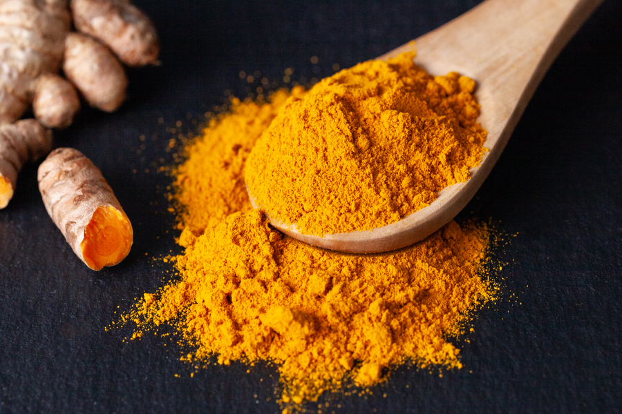

BLOG - WELLNESS OF TURMERIC
17 October 2022
Turmeric is composed of several naturally occurring colour and flavour compounds that weave together to build a complex, rich, aromatic, and bright looking root. It is then grounded to make the fine powder that we sprinkle in our daily meals.
Health Benefits of Turmeric
The Arabic, Sri Lankan, and traditional Indian [Ayurvedic] medicinal texts and practices have been encouraging the consumption of turmeric for many centuries. Since modern research has now proven its health benefits, it continues to be of importance today
Furthermore, its anti-inflammatory properties help treat stomach, liver, and dental problems, and is also known to cure diabetes and arthritis. However, all of this is true only if your turmeric powder is authentic, and not processed so much so that it loses all its natural properties.
No Chemical Additives
Turmeric powder is mixed with a toxic azo dye, Metanil Yellow, which contains carcinogenic and neurotoxic threats for the body. However, turmeric at Conscious Food is sourced, processed, and stamped with a certificate from NOCA which proves that it is of the highest quality and assures the consumer that its natural colours and flavours has not been tampered with during the grounding process.
Skin Friendly
Aside from using turmeric for its distinct colour and flavour in your Indian curries and rice dishes, the golden spice can be used in many other ways. Try adding it to your cup of milk to give it a twist of flavour or including it in your skin-care treatments for softer and acne-free skin.
Sustainably and Organically Sourced
Aligning with the aim of promoting organic, chemical free, whole, unadulterated, and refined food products, Conscious Food encourages small-holder farmers and women to join the workforce and contribute towards bringing wholesome meals to your table.
Iron Pounded
By grinding and iron-pounding the root over low heat rather than using machines, the Conscious Food turmeric powder retains its nutrients and flavour. Machines on the other hand employ high heat during the grounding process that results in the nutrition petering out. The methods incorporated ensure that the turmeric reaching you is not compromised in any form.
When sourced keeping in mind the labour, environmental, and ecological impacts of the production process, turmeric powder with its wonderful abilities, better nourishes us and the Earth. Fair trade practices, organic farming, safe and optimised storage, encouragement of gender equality, and the preservation of the nutrients are all packed into every wholesome box of Conscious Food’s turmeric powder you purchase. So grab your bag of the royal golden spice today!